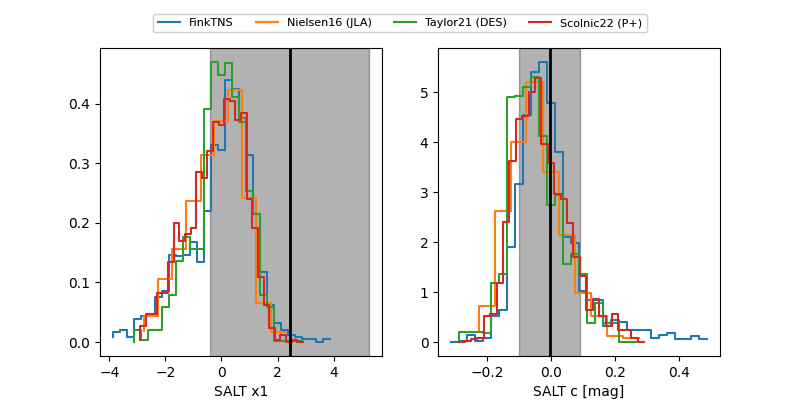

FINK: ZTF25abqnnyw
Lasair: ZTF25abqnnyw
ALeRCE: ZTF25abqnnyw
TNS: 2025xjg
YSE: 2025xjg
ZTF25abqnnyw (ztf,fink)
2025xjg (tns,yse)
equatorial (ra, dec) = (29.4114,+5.25440)
galactic (l, b) = (151.6977,-53.87820)

last ztfg=19.35, ztfr=19.44
3 ztfg, 2 ztfr detections